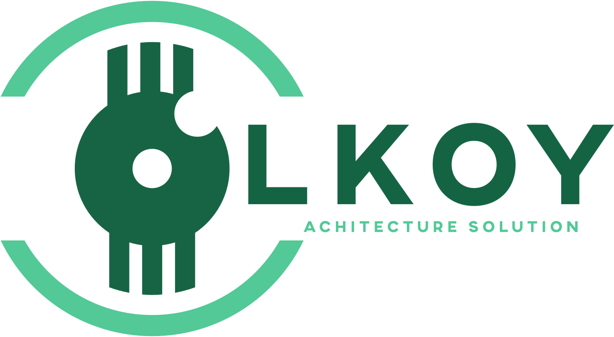
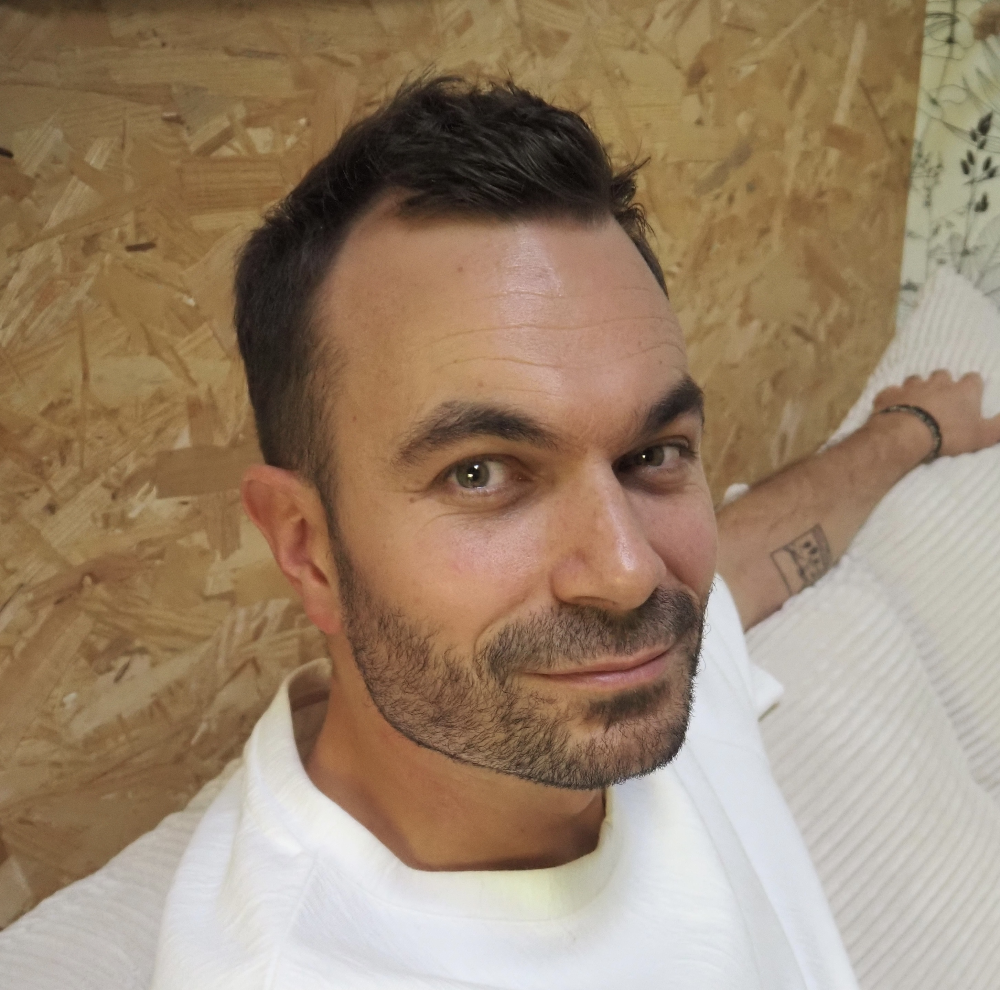

Me contacterMon expertise de la plateforme 3DEXPERIENCE me permet d'intervenir auprès de mes clients sur des sujets d'architecture fonctionnelle, d'assistance à maîtrise d'ouvrage, de définition des processus métier, de conseil et de formation.
Fort de 15 années d'expérience acquises auprès de grands industriels et de cabinets de conseil de référence, mon objectif est de sécuriser vos projets 3DEXPERIENCE, faciliter l'adoption de la plateforme par les utilisateurs et garantir une solution adaptée à vos enjeux métier.

Fort de plus de 15 années d'expérience, j'interviens auprès des industriels pour faciliter l'adoption de la plateforme 3DEXPERIENCE, optimiser les processus métier et concevoir des solutions adaptées à leurs enjeux opérationnels.
Mon expérience acquise auprès de Dassault Systèmes, Dassault Aviation,Safran Aircraft Engines, Alstom Transport et de nombreux autres acteurs industriels me permet d'apporter des solutions pragmatiques et adaptées aux enjeux métier.
J'interviens à chaque étape de vos projets 3DEXPERIENCE : définition des processus métier, architecture fonctionnelle, accompagnement des utilisateurs et montée en compétences des équipes.
Animation d'ateliers métier, analyse des besoins, rédaction des spécifications fonctionnelles, paramétrage de la plateforme et définition du modèle de données. Livrables : MS Power Point, Vidéos, Wiki
Accompagnement des équipes projet, cadrage fonctionnel, ateliers métier, stratégie de déploiement et bonnes pratiques.
Assistance à distance, résolution d'incidents, coaching opérationnel et soutien quotidien. Je me rends disponible sous 2h pour analyser vos problématiques métiers, logiciel et questions courantes. Les 20h d'assistance sont valables 1 an.
Formation utilisateurs, key users et administrateurs. Programmes personnalisés adaptés à vos processus. Devis sur demande.
Comprendre les concepts fondamentaux du Manufacturing.
Lire l'article →Plus de 15 années d'expérience dans l'accompagnement des industriels sur la plateforme 3DEXPERIENCE, au sein de cabinets de conseil reconnus et sur des programmes de transformation d'envergure.
J'ai contribué à des programmes de transformation industrielle d'envergure au sein d'Accenture, Capgemini, Visiativ et Kéonys, en occupant des fonctions d'Architecte Solution et de Lead Architect sur la plateforme 3DEXPERIENCE.
Mes missions consistaient à définir l'architecture fonctionnelle cible, structurer les processus métier et garantir la cohérence globale des solutions déployées.
Sur les programmes les plus complexes, j'assurais également la coordination des architectes spécialisés (Engineering, Manufacturing, Configuration, Requirements, Change Management ou Reporting) afin d'assurer une vision globale et cohérente de la solution.
Besoin d'un expert 3DEXPERIENCE pour un projet, du support utilisateur ou une formation ?